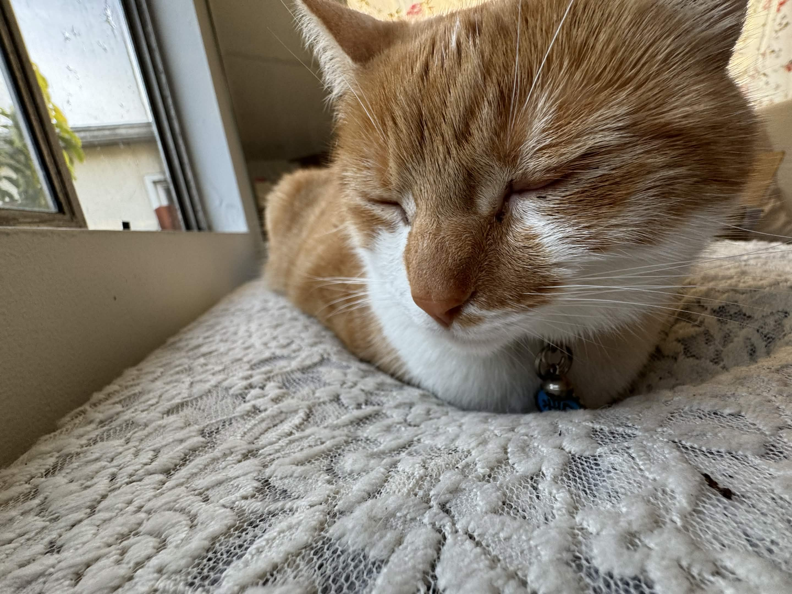
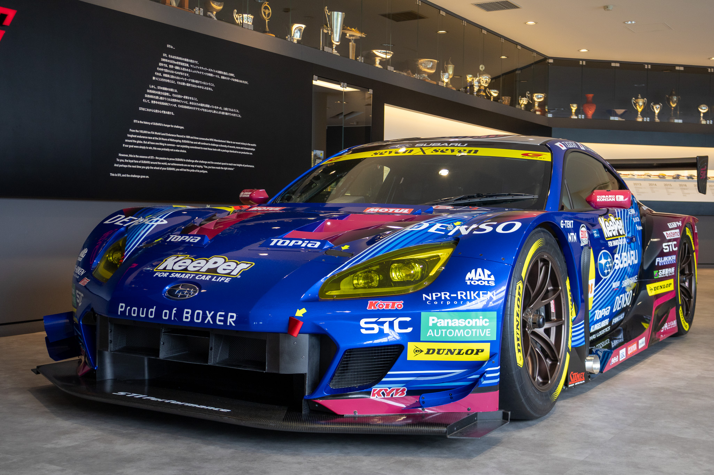

I am a DSC 106 student and this is my cat, Mocha.

Recently, I got into photography and went on a study abroad trip to Tokyo at International Christian University. The campus was located right next to a Subaru STI Gallery and thought it was a great chance to photograph cars. I really love cars and my realistic dream car right now is a GR86/BRZ. This is a picture of one of the BRZ's that the museum had. I got to ride in it and was a great experience as a car enthusiast.
